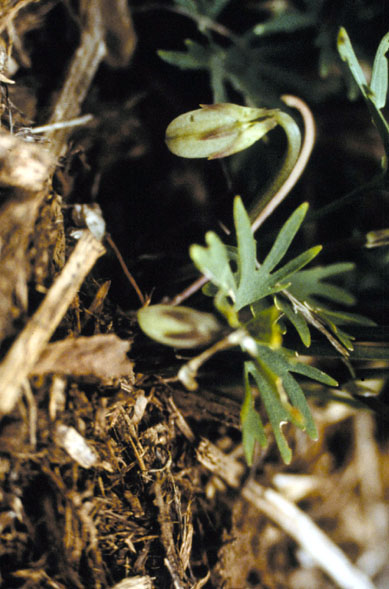
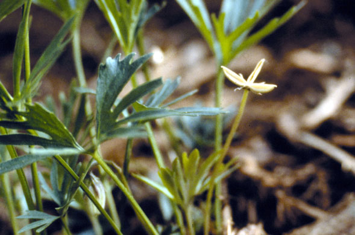
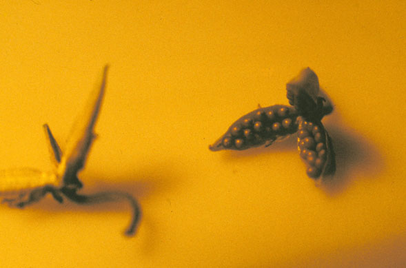
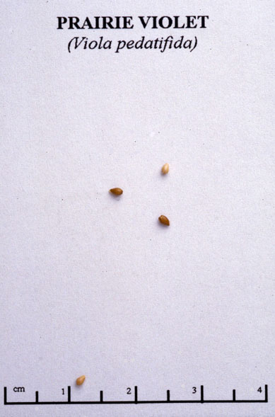

Viola Pedatifida
Family: Violaceae
Prairie Violet
Swink/Wilhelm # 9



Click to view larger photo
FLOWERING: May to early June
SEED TIMING: Seed pods are produced all summer
HABITAT: Mesic prairie
DIAGNOSTIC FEATURES: 4 - 8 inches high. Broad leaves with an overall shape of a fan, but deeply divided, usually into three or more parts. Each of these parts is further cleft, almost to the base, into two or four narrow, grasslike lobes. Blue flowers, which may grow to 3/4 inch across, are carried just above the leaves on erect, slender stems that arise from the crown.
TO PICK: Fruit is a yellowish gray capsule about 1/4 inch long. It contains several tiny, light brown seeds. Capsules must be picked before they explode and scatter seed over wide area. Unripe capsules face downward. When they turn a lighter color and bend upward, they are ready to gather. Pinch or cut capsules off and place in a closed brown paper bag until they open and release seeds. When seeds are dry, remove as much of the chaff as possible and store seeds in a plastic bag in a cool place.